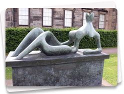
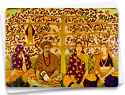
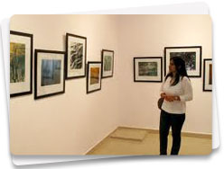
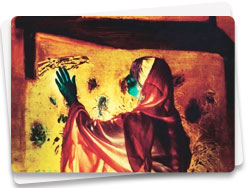
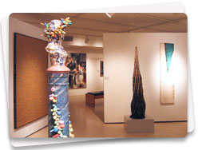

Delhi's artistic infrastructure was developed post 1947 by the efforts of the Delhi Shilpi Chakra (an artist group)
and India's first private art gallery, the Dhoomimal Gallery. With the government's first five year plan (1951-56),
India adopted a cultural policy that established the Lalit Kala Academy and the National Gallery of Modern Art in
Delhi. This made Delhi an important centre for art, a status that had been earlier granted Bengal and Bombay.
Contemporary Indian art is flourishing and Delhi has an ever changing roster of paintings and exhibitions in its
galleries. Everything from abstract art to sombre studies of urban life can be found in these exhibits.

National Art Gallery of Modern Art:
Jaipur House, India Gate, New Delhi-110001 Phone.: 23382835 Timings: 10.00 am to 5.00 p.m Closed: Monday
One of India's major art galleries, the National Gallery of Modern Art was once the residence of the Maharaja of
the Jaipur. Situated near India Gate at the Eastern end of Rajpath, it houses an excellent collection of works by both
Indian and colonial artists dating from 1850. The gallery has a collection of more than 15,000 paintings, sculptures
and graphics.

Lalit Kala Akademi:
Rabindra Bhawan, Feroze Shah Road, New Delhi-110001. Phone.: 23387241-43 Timing: 10.00 am to 6.00 pm (closed on Saturday and Sunday)
This spacious gallery is spread over three floors and had its first national exhibition of art in 1958. The gallery holds
the prestigious Triennale India in which 30 to 40 countries participate, and a national exhibition of photography and
art is held. One always finds something interesting happening here, especially during the winter months.

Triveni kala Sangam:
Tansen Marg, New Delhi. Phone.: 23718833 Timing: 9.30 am to 5.30 pm (Closed on Sunday)
A four galleried cultural complex including the basement gallery run by Art Heritage. Shridharni Gallery is the
largest gallery here. Triveni Gallery has smaller format works on display. The complex has a sculpture court for
exhibitions and a bookshop with unconventional books, journals and cassettes.

Art Heritage
205, Triveni Kala Sangam, Tansen Marg, New Delhi. Phone.:23718833. Timing: 11.00 am to 7.00 pm
A respected name in the art world was founded in 1977 by Roshen Alkazi. The gallery holds regular exhibitions
throughout the year of some of the best known artists in India.

Art Today
A-1 Hamilton House, Connaught Place, New Delhi-110001. Phone.: 23320689 23352233 Timing: 11.00 am to 7.00 pm
It hosts the collections of the best artists and its exhibitions are often commercially high profile. The gallery
produces well designed catalogues and posters.
 ilWaliDilli
ilWaliDilli